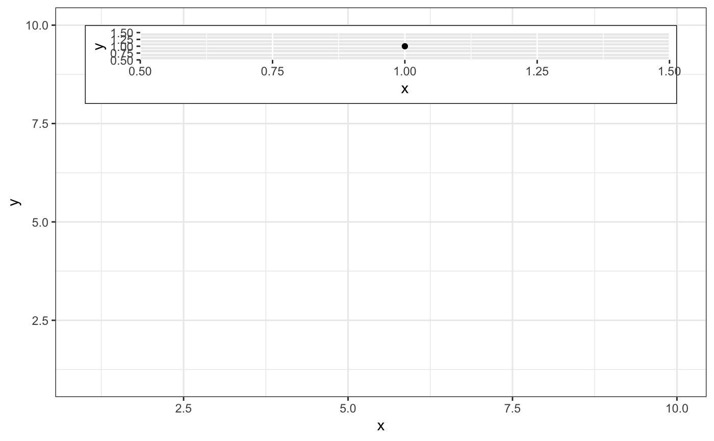
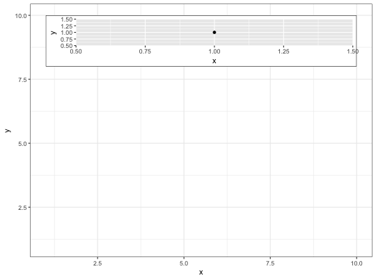

This is a special geom intended for use as static annotations that are the same in every panel. These annotations will not affect scales (i.e. the x and y axes will not grow to cover the range of the grob, and the grob will not be modified by any ggplot settings or mappings).
annotation_custom(grob, xmin = -Inf, xmax = Inf, ymin = -Inf, ymax = Inf)
Most useful for adding tables, inset plots, and other grid-based decorations.
annotation_custom expects the grob to fill the entire viewport
defined by xmin, xmax, ymin, ymax. Grobs with a different (absolute) size
will be center-justified in that region.
Inf values can be used to fill the full plot panel (see examples).
# Dummy plot df <- data.frame(x = 1:10, y = 1:10) base <- ggplot(df, aes(x, y)) + geom_blank() + theme_bw() # Full panel annotation base + annotation_custom( grob = grid::roundrectGrob(), xmin = -Inf, xmax = Inf, ymin = -Inf, ymax = Inf )# Inset plot df2 <- data.frame(x = 1 , y = 1) g <- ggplotGrob(ggplot(df2, aes(x, y)) + geom_point() + theme(plot.background = element_rect(colour = "black"))) base + annotation_custom(grob = g, xmin = 1, xmax = 10, ymin = 8, ymax = 10)